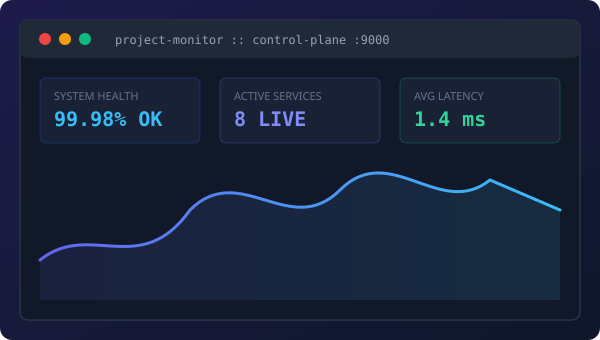

Backend & Full-Stack Developer | Python & Linux Systems
I build high-throughput backend microservices, resilient Linux daemons, and polished, responsive web interfaces. Focused on performance profiling, clean architecture, and zero-bloat software design.
A brief overview of my engineering philosophy, background, and what drives me.
Hello! I am a software engineer with deep interest in systems architecture, backend engineering, and robust web standards. Over the past 4+ years, I have worked across the stack—from tuning kernel-level process management in Linux environments to delivering responsive frontend experiences.
I believe in simple, maintainable software with zero unnecessary dependencies. Whether designing high-concurrency Python microservices with uvloop or architecting SQLite WAL data pipelines, I prioritize predictable latency, clear documentation, and testability.
When I'm not writing code, I explore lightweight edge hardware performance, open-source utilities, and developer tooling automation.
Distributed Systems & APIs
Designing RESTful interfaces, asynchronous task queues, and resilient service orchestration.
Linux & System Internals
POSIX process management, low-overhead resource profiling, and ARM64 architecture tuning.
Performance & Accessibility
Achieving 100/100 Lighthouse metrics with clean semantic HTML and WCAG AA compliance.
02. Capabilities
Technical Skills
Core technologies, frameworks, and methodologies I leverage daily.
Real-world production tools and backend systems engineered for speed and reliability.

Featured
Project Monitor PaaS
Personal PaaS Control Plane & Process Monitor
Engineered a low-overhead process monitoring and management dashboard for Linux environments. Features real-time metric telemetry, PID tracking, and graceful signal orchestration.
✓ Zero-dependency background manager with live metrics
Single-source-of-truth photo and video streaming application with WAL-mode SQLite indexing, FFmpeg thumbnailing pipeline, and responsive masonry gallery interface.
✓ Sub-millisecond query latency on 50k+ media assets
Async cron engine and distributed job worker tailored for resource-constrained ARM64 edge nodes. Provides fault-tolerant retries and isolated subprocess runners without GIL lock contention.
I am currently open to exciting backend engineering roles, systems infrastructure opportunities, and collaborative technical projects. Feel free to reach out directly!